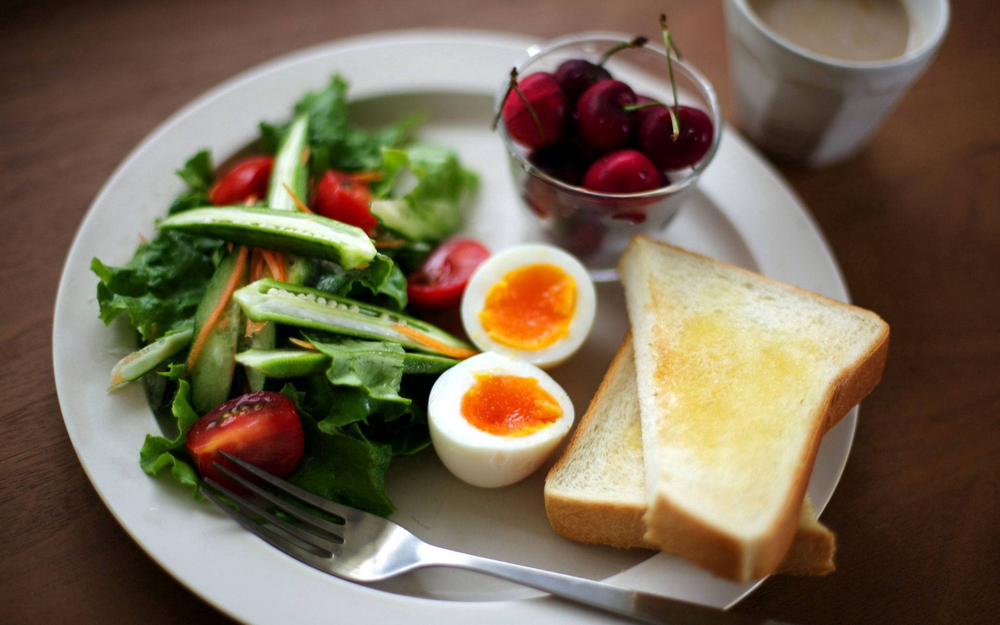

Home
Perfect Breakfast

Description
What's the perfect breakfast? A delicious combination of unique favors my mom put together by accident!
I hope others will enjoy it as much as we do.
Ingredients
- 2tsp butter
- 2 eggs
- 1 slice sourdough bread, toasted
- dijon mustard
- ½ avocado - peeled, pitted, and sliced
- 2tbsp grated Parmesan cheese, or more to taste
Steps
-
Melt butter in a skillet over medium heat. Add eggs and cook until whites are mostly firm. Break yolks and
continue
cooking until eggs are set and no longer runny, 2 to 3 more minutes.
- Spread one side of toasted sourdough with Dijon mustard. Arrange avocado slices on bread and top with cooked
eggs.
Sprinkle with Parmesan cheese.